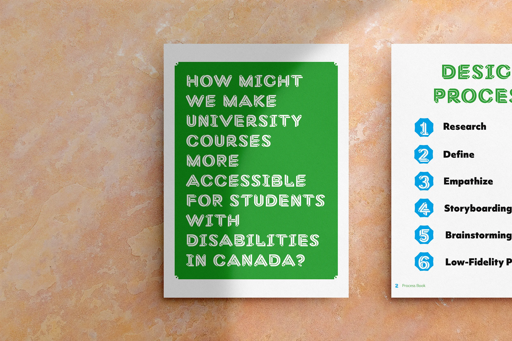

Universal Design for Learning (Prototype)
Background
This document highlights the process that went into prototyping a possible website that would assist professors in implementing Universal Design for Learning practices in their classrooms. It is a web application designed to help educators create accessible and inclusive learning environments for all students, including those with disabilities. The platform incorporates the principles of Universal Design for Learning to create customizable lesson plans that meet the needs of every learner.
User Problem
Educators face the challenge of creating inclusive learning environments that meet all students' needs. This is particularly challenging for students with disabilities, as traditional teaching methods may not be effective for everyone. Educators need a tool that helps them create accessible and inclusive lesson plans tailored to meet their students' diverse needs.
Proposed Solution
The Universal Design for Learning Prototype provides educators with a user-friendly platform for creating accessible and inclusive lesson plans, including:
- Customizable Lesson Plans — tailored to meet the needs of every student in the class, with various options for presenting information and engaging students
- Accessibility Tools — closed captioning, text-to-speech, adjustable font sizes
Design Process
The design process began with research into the principles of Universal Design for Learning and the needs of educators when it comes to creating inclusive learning environments. I then developed wireframes and prototypes. The final design incorporates a clean, intuitive interface with easy-to-use tools for creating and customizing lesson plans.